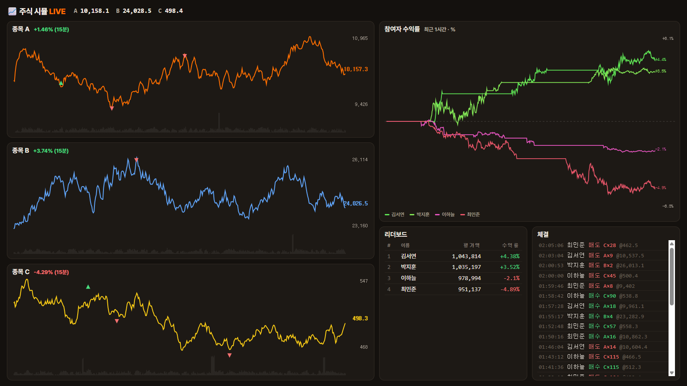
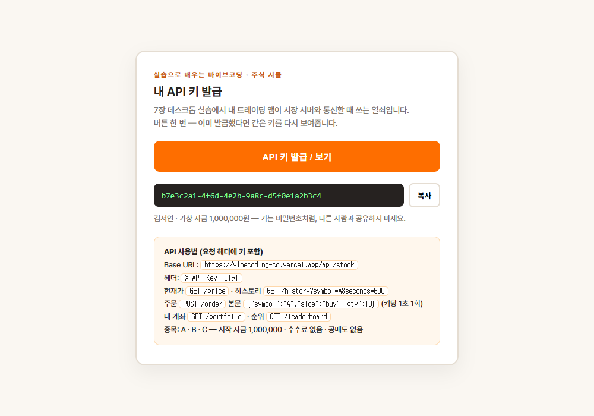
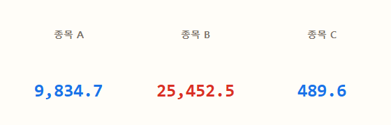
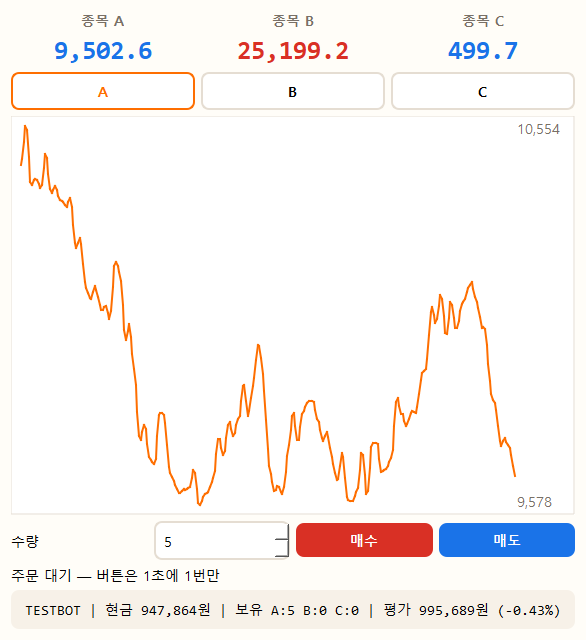
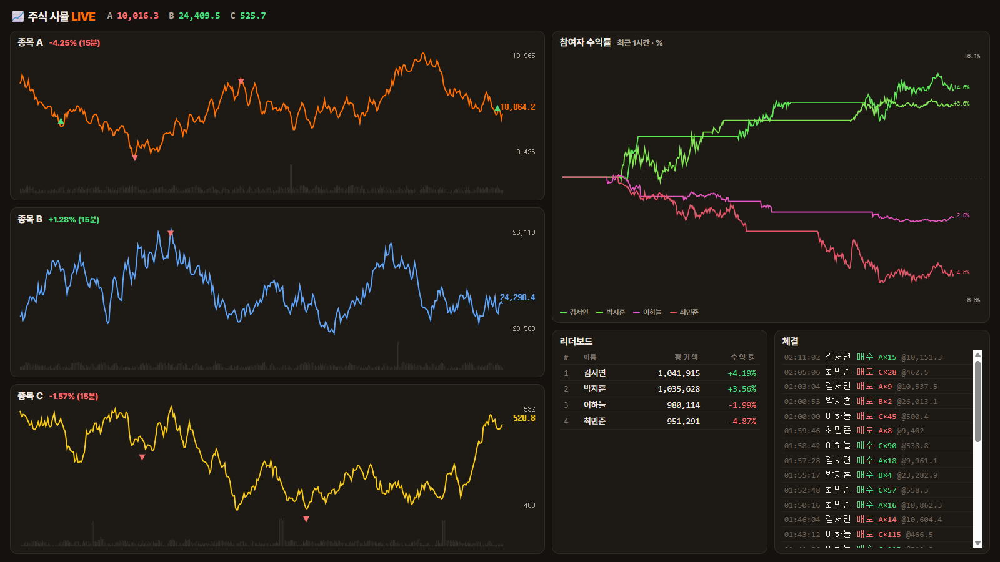

이번엔 내 앱이 — 서버와 통신한다
투두리스트는 내 PC 안에서만 돌았습니다. 이번엔 강의가 제공하는 "가상 주식 시장" 서버에 내 앱을 접속시켜 — 시세를 받아오고, 매수·매도를 쏘고, 전원이 같은 리더보드에서 경쟁합니다. 프로그램이 세상과 대화하는 법, API입니다.
혼자 놀던 앱이 — 세상과 대화하려면
로컬 프로그램 — 혼자 논다.
4장에서 웹페이지가 API를 썼다면 — 이번엔 내 프로그램이 씁니다.
API = 서버가 정해둔 정식 창구. 스펙(주소·형식·규칙)만 알면 어떤 프로그램이든 대화할 수 있습니다.
1초마다 움직이는 — 우리만의 시장
규칙
- 종목 A · B · C — 1초마다 시세 변동 (현실 하루 장세를 몇 분에)
- 시작 자금 가상 100만원 · 수수료 없음 · 공매도 없음
- 여러분의 매수·매도가 가격을 밀고 당깁니다 — 큰 주문일수록 크게
- 강의 화면에 실시간 차트·리더보드·체결이 계속 표시

가짜 돈, 진짜 통신 — 시장은 가상이지만 여러분의 앱이 하는 API 통신은 실무 그대로입니다.
많이 살수록 — 비싸게 사진다.
주문 수량이 클수록 체결가가 나에게 불리해집니다(수량 × 0.05%, 최대 5%). 그리고 큰 주문은 시장 가격 자체를 밀어올리거나 끌어내립니다 — 진짜 시장의 "슬리피지"를 흉내낸 규칙.
이 표가 — 내 앱의 설계도입니다
Base URL https://vibecoding-cc.vercel.app/api/stock · 모든 요청에 헤더 X-API-Key: 내키 — 키 발급 · API 문서 ·라이브 보드
| 메서드 | 경로 | 설명 | 응답(요약) |
|---|---|---|---|
| GET | /price | 3종목 현재가·거래량 | quotes — 종목·가격·거래량 ×3 |
| GET | /history?symbol=A&seconds=600 | 최근 N초 시세 (최대 3600) | series — 시각·가격·거래량 목록 |
| POST | /order | 시장가 주문 — 본문 {"symbol":"A","side":"buy","qty":10} | 체결 수량·체결가·슬리피지·잔고 |
| GET | /portfolio | 내 현금·보유·수익률·체결 내역 | cash·pnl_pct·trades |
| GET | /leaderboard | 수익률 순위 | rows — 이름·평가액·수익률 |
규칙: 시세 조회는 1초에 한 번 정도(그보다 빨라도 서버가 같은 값), 주문은 키당 1초 1회 — 넘기면 429 에러. 표는 훑어만 두세요 — API 문서에서 api.md를 내려받아 프로젝트 폴더에 넣고, Claude에게 @api.md로 보여주며 만듭니다.
강의자료 사이트에서 — 버튼 한 번
발급 = 내 계좌 개설
- 강의자료 사이트의
/slide/stock-sim/key.html접속 - "API 키 발급 / 보기" 클릭 → 키 복사
- 키 발급과 동시에 가상 100만원 지급 — 이름은 열람 신청 이름 그대로
- 키는 비밀번호처럼 — 공유 금지 (남이 내 계좌로 몰빵할 수 있음)

로그인된 수강생만 발급됩니다. 다시 누르면 같은 키를 보여주니 잃어버려도 걱정 없음.
먼저 — 시세가 흐르는 창부터
가장 작은 통신
- 1초마다
GET /price폴링 - 3종목 현재가를 큰 글씨로 표시
- 오르면 빨강↑ · 내리면 파랑↓ (한국식)
폴더는 c:\lecture\trader~/lecture/trader — 새로 만들고, 내려받은 api.md를 이 폴더에 넣어둡니다.
@api.md 명세서를 읽고, 주식 시세 뷰어를 trader.py로 만들어줘. 1초마다 GET /price 로 3종목 현재가를 받아 큰 글씨로 보여주고, 직전보다 오르면 빨강, 내리면 파랑으로 표시해줘. 내 API 키: [내키]
PySide6로 만들고, 통신 중에 창이 얼지 않게 해줘. 나는 처음이니까 설명하며 진행해줘.
@api.md는 3장에서 배운 파일 멘션 — Claude가 명세서를 통째로 읽고 정확한 스펙으로 만듭니다. [내키] 자리에 방금 발급받은 키를 붙여넣으세요. 숫자가 1초마다 바뀌기 시작하면 — 내 앱이 서버와 대화하는 중입니다.
숫자가 뛰기 시작하면 — 통신 성공

확인 포인트
- 강의 화면(라이브 보드)과 같은 가격인가? — 같은 서버니까 같아야 정상
- 창을 움직여도 숫자가 계속 뛰는가? — 통신이 창을 안 얼리는지
- 키를 지우면? — 401 에러. 키가 곧 신분증임을 확인
에러가 나면 메시지를 통째로 Claude에게 — "401 unauthorized"는 키 오타, "timeout"은 인터넷 문제입니다.
히스토리 API로 — 차트를 그린다
추가되는 것
GET /history?symbol=A&seconds=300— 최근 5분 시세 배열- 종목 선택 버튼(A/B/C) + 라인 차트
- 차트도 몇 초마다 갱신
trader.py에 차트를 추가해줘. 종목 버튼(A/B/C)을 누르면 @api.md 의 /history 로 최근 5분(seconds=300) 시세를 받아 라인 차트로 그려줘. 3초마다 갱신하고, 외부 차트 라이브러리 없이 PySide 기본 기능으로 그려줘.
차트가 강의 화면과 같은 모양으로 흐르면 성공 — 같은 데이터, 내가 만든 화면입니다.
이제 — 주문을 쏜다
추가되는 것
- 수량 입력 + 매수/매도 버튼 →
POST /order GET /portfolio— 내 현금·보유·수익률 표시- 체결 결과(체결가·슬리피지)를 화면에
trader.py에 매매 기능을 추가해줘. 수량 입력칸과 매수/매도 버튼을 만들고, 누르면 @api.md 의 /order 로 주문을 보내줘. 응답의 체결가와 슬리피지를 표시하고, 5초마다 /portfolio 를 불러 내 현금·보유 수량·수익률도 보여줘. 주문은 1초에 1회 제한이 있으니 버튼 연타를 막아줘.
첫 주문이 체결되는 순간 — 강의 화면 체결 피드에 내 이름이 올라옵니다. 리더보드 경쟁 시작.
완성 — 내 트레이딩 단말기


전원의 주문이 하나의 시장을 움직입니다 — 차트가 출렁이면 누군가 몰빵한 겁니다.
일부러 — 몰빵해 보세요.
전 재산으로 한 종목을 최대 수량 매수 → 체결가를 보세요. 시장가보다 한참 비싸게 사졌고, 그 순간 차트가 튀어오르며 — 다른 사람들이 여러분 덕에 비싸게 사게 됩니다. 그리고 바로 팔면? 이번엔 싸게 팔립니다.
전략 버튼 — 골라서 실험해 보세요
오르면 산다
최근 30초 +0.5% 이상이면 매수, −0.5% 이하면 매도.
떨어지면 줍는다
급락하면 매수, 급등하면 매도 — 모멘텀과 정반대.
거래량이 신호
거래량 급증 + 상승이면 매수, 급증 + 하락이면 청산.
기계적으로 끊는다
진입가 대비 +3% 익절 · −2% 손절 자동 청산.
trader.py에 "자동매매" 켜기/끄기 버튼을 추가해줘. 켜져 있는 동안 5초마다: 선택 종목의 최근 30초 수익률이 +0.5% 이상이면 10주 매수, -0.5% 이하이고 보유 중이면 전량 매도해줘. 주문 1초 1회 제한은 지키고, 매매할 때마다 로그를 화면에 남겨줘.
수동 트레이더 vs 자동 전략 — 같은 리더보드에서 붙습니다. 어떤 전략이 이길지는 장세가 결정합니다.
trader.exe.app로 묶고 — 리더보드 타임
마무리 2가지
- 덱 1과 똑같이 — "trader.py를 PyInstaller로 .exe.app로 만들어줘"
- 남은 시간 자유 매매 — 수익률 상위 3명 호명 (라이브 보드)
- 마감 후: 무엇이 먹혔는지 한 줄 공유 (전략? 감? 몰빵의 반성?)
오늘 배운 진짜 기술
- API 스펙을 읽고 — 그대로 통신하는 앱을 만들었다
- 키 인증 · 폴링 · POST 주문 · 에러(401/429) 대응
- 세상의 모든 API가 이 패턴입니다 — 다음 덱에서 진짜로 확인
주식이 아니라 통신을 배운 것 — 시세 대신 날씨든 채팅이든, 스펙만 있으면 같은 방법으로 만듭니다.
내 프로그램이 — 세상과 대화했다
로컬에서만 돌던 앱이 서버와 통신하며 전원이 같은 시장에서 경쟁했습니다. API 키·폴링·주문·레이트리밋 — 실무 API 통신의 뼈대를 가상 시장에서 안전하게 겪었습니다.